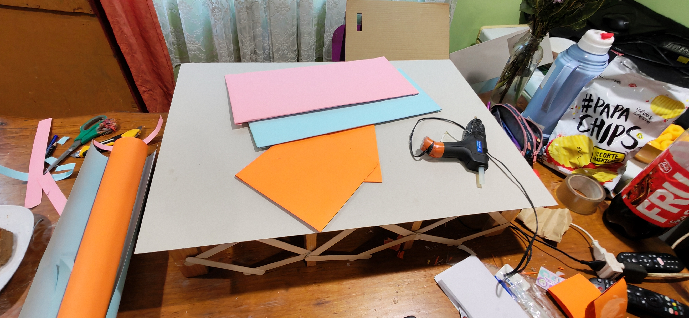
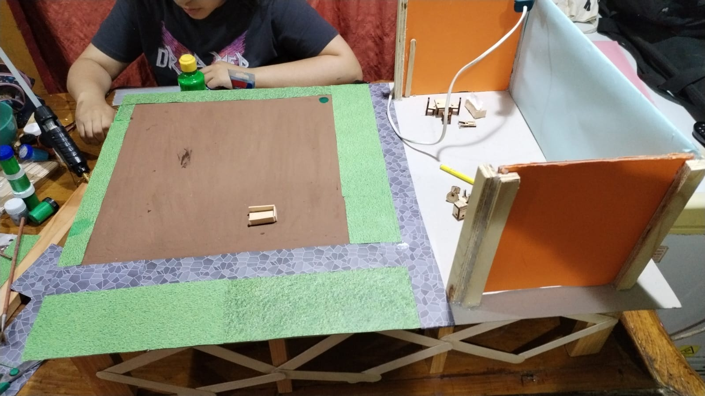
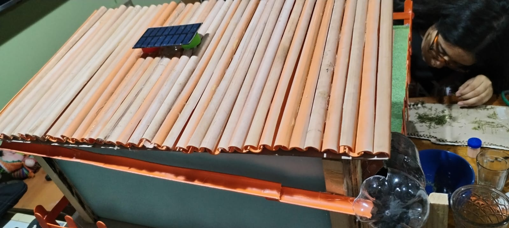
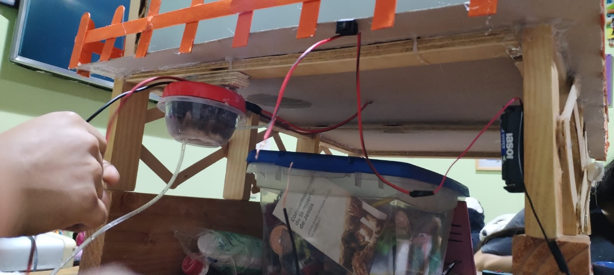

Paso 1:
Primero partimos haciendo la base con un carton piedra y pilares de madera reforzado con palitos cruzados entre pilares.

Paso 2:
Luego empezamos a montar la casa.

Paso 3:
Despues empezamos a decorar y complementar la casa y los alrededores de la maqueta.

Paso 4:
Luego montamos un techo con estilo tipo tejas inclinadas para que el agua de lluvia vaya por una canaleta a la purificadora que colocamos al final de la canaleta, tambien le agregamos un panel solar como energia a la casa (esto para ahorrar energia en el dia),

Paso 5 : FINAL:
Por ultimo por la parte de abajo implementamos tuberias para purificar el agua que se ocupa en la ducha o cocina y reutilizarla ya una ves purificada para cultivos, etc. Ademas le agregamos como segunda energia un sistema de baterias (para la noche) esta se utilizara esclusivamente para la bomba hidraulica y las luces de la casa.
